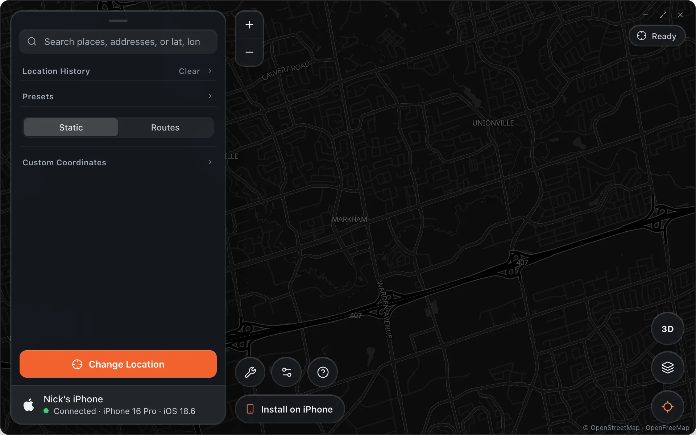

Get started
Alibi Docs
Alibi puts your iPhone anywhere on Earth from your Mac, using the location path Apple ships for developers. Nothing on the phone is modified, and every app believes the new location.

Start here
Install Alibi on macOSDownload the DMG, drag it into Applications, open it once with right-click.
Setup iPhone for AlibiCable, Trust, Developer Mode. Alibi walks the phone through it and says Connected.
Static ModeSearch or click a place and press Change Location.
Routes ModeStart, end, up to ten waypoints, at walking, cycling or driving speed on real roads.
Saved LocationsSave places and whole routes to come back to.
Location HistoryEverywhere you have been, in both modes.
Map stylesDark, Satellite with names, Matrix, Light, and 3D.
What you need
- A Mac running macOS 13 or later and an iPhone on iOS 17.4 or later.
- A cable. Alibi talks to the phone over USB; there is no jailbreak and no profile to install.
- Developer Mode turned on in Settings › Privacy & Security. Alibi tells you when it is off.
Free to useNo account and no subscription. Changing your location needs an access code — get one free with a referral.